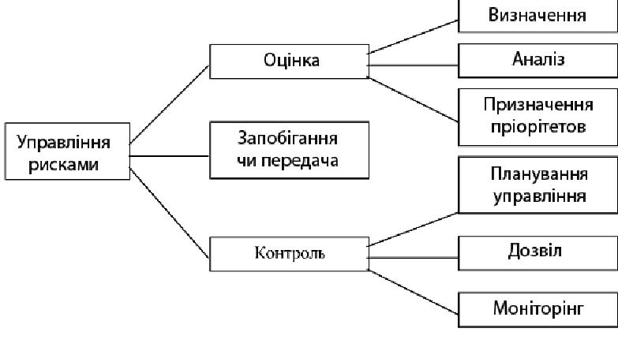

Узгодження вимог та керування рисками
Ризик в реалізації програмних проектів - це потенційна проблема, яка має істотну вірогідність негативно вплинути на успішність проекту, наприклад - на здачу його в строк, задоволення бюджетних обмежень, якість продукту, ефективність роботи команди.
Управління ризиком - комплекс заходів по виявленню, оцінці, запобіганню і контролю ризиків проекту.
Як пише К. Вигерс [8], «Якщо що-небудь нехороше вже сталося з вашим проектом, то це - проблема, а не ризик... Управління ризиком означає роботу потенційною небезпекою до того, як вона перейде в кризову фазу». Менеджери проектів повинні виявляти ризик і управляти їм, починаючи з чинників, пов'язаних з вимогами, в співпраці з представниками Замовника. Стратегії і роботи по управлінню ризиком.

Рис.7 Управління ризиком, включаючи дії.
Роботи по оцінюванню ризику(risk assessment) розпочинаються з визначення потенційних небезпек для проекту. В якості методики виявлення може бути рекомендована методика мозкового штурму. Хорошою підмогою для цього етапу робіт є наявна у Розробника класифікація ризиків.
Так, усі риски прийнято для ділити на прямі(ті, на які Розробник може так чи інакше впливати) і непрямі(незалежні від Розробника) [15].
М. Фаулер [7] запропонував розділити усі риски на чотири категорії:
- риски, пов'язані з вимогами
- технологічні риски
- риски, пов'язані з кваліфікацією персоналу
- політичні риски.
Поширені чинники ризику, пов'язані з вимогами, включають невірне розуміння вимог, недостатнє залучення користувачів, неточності або зміни в масштабах і цілях проекту, постійно нестабільні вимоги. Детальний аналіз цих видів ризиків можна знайти в [8], глава 23.
Аналіз ризику зводиться до дослідження і опису потенційних наслідків конкретних чинників ризику для проекту, а також вірогідності їх прояву.
Визначення пріоритетів складається з пошуку відповідей на два питання: наскільки вірогідний прояв ризику в проекті; наскільки руйнівні можуть бути наслідки його прояву.
Виявлені риски поміщаються в спеціальний документ - risk list.
Існують три основні стратегії поведінки відносно ризиків: Запобігання ризику, передача ризику, прийняття ризику.
Запобігання ризику(risk avoidance) - це процес реорганізації проекту так, щоб ризик не міг на нього впливати. Наприклад - відмовитися від передових інструментів, що знову з'явилися, на користь випробуваних, не включати в план ті функції, які вимагають освоєння нових технологій.
Передача ризику - перерозподіл робіт проекту так, щоб хтось інший(Замовник, партнер і тому подібне) відповідав за роботу з ним.
Прийняття ризику зобов'язує Розробника «піклуватися» про нього. Заходи по контролю ризику(risk control) включають планування, дозвіл і моніторинг.
Планування управління ризиком має на увазі створення плану дій для кожного окремого чинника, включаючи методи пом'якшення, плани на випадок непередбачених обставин, відповідальних осіб і терміни виконання. Мета дій з пом'якшення дії ризику - або не дозволити ризику стати проблемою, або зменшити його шкідливу дію.
Деякі риски можуть бути дозволені в процесі роботи над проектом, вони видаляються зі списку ризиків, інші - навпроти, виявлені в ході виконання проекту і додані в цей документ.
Моніторинг ризиків покликаний здійснювати спостереження над рисками зі списку, відстежувати їх просування аж до дозволу, працювати з їх пріоритетами.